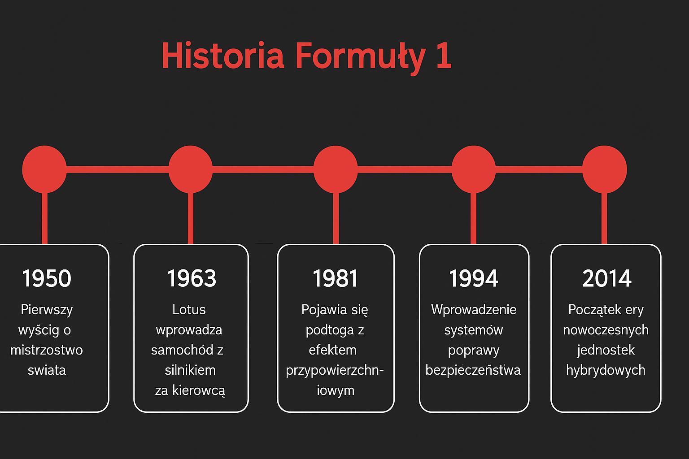

Historia i legendy F1
Formuła 1 – historia pasji, tragedii i legend. Słynna braziliska piosenka autrostwa Roberta Bragi o Ayrtonie Sennie - legendarnym kierowcu F1 Historia Formuły 1 zaczęła się w 1950 roku na torze Silverstone. Pierwsze bolidy były prymitywne, a bezpieczeństwo praktycznie nie istniało – kierowcy ścigali się bez pasów, w otwartych kaskach, a na torach brakowało barier. Mimo to, właśnie wtedy narodziły się legendy: Juan Manuel Fangio, Alberto Ascari czy Jim Clark. W kolejnych dekadach F1 ewoluowała. Lata 70. i 80. to czas niebezpiecznych bolidów i dramatycznych wypadków, ale także narodzin supergwiazd jak Niki Lauda, Ayrton Senna czy Alain Prost. Po śmierci Senny w 1994 roku, wprowadzono szereg reform bezpieczeństwa, które odmieniły sport na zawsze. Dziś F1 to nie tylko widowisko, ale też hołd dla tych, którzy budowali ją przez lata – często ryzykując życiem.
